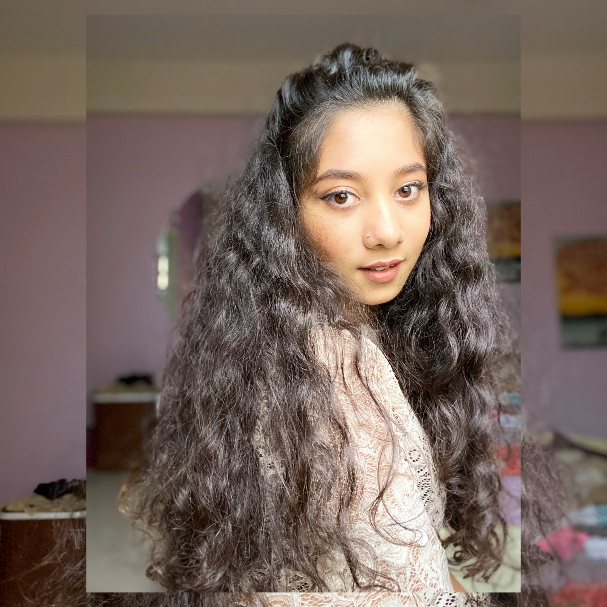

Computer Architecture (Theory), Introduction to Programming Language(Lab), Data Structures(Lab), Digital Logic Design(Lab), Operating Systems(Lab), Microprocessors(Lab)
Worked at AnexaTech Ltd., learning and working with Javascript frameworks i.e Angular and Materials
Appointed as the Student Tutor/Teaching Assistant of CSE110(Programming Language 1) under CSE department for Fall2018
At times when I miss my old-self,
I paint natures/abstracts/still-life objects
OR sketch portraits of celebrities and friends.
I relate to the past with this hobby as my interest in arts initiated when I was 3 years old
and I believe it's also genetic. I've always been passionate about creating, visualizing and mixing
combinations of bright colors .
When I want to escape the reality, I play piano. I've taken a few lessons in 2016 that helped me get started with the basics of piano with a few classics. However, I still continue to learn and practice different songs from youtube. I find piano tunes extremely soothing and peaceful.
When I'm happy, driven and have no work pressure, I try to learn new dances. This interest of mine has began back in 2013 when I tried choeroagraphing dance steps with the help of youtube for family members' wedding programs Gradually, I got better at learning and improvising new steps easily, Any physcial activity helps to keep both the body and mind healthier.
I have began yoga classes last year. I find many people in Bangladesh "saying yoga is a
feminine practice",
but trust me it's NOT! Yoga is for every individual regardless of gender or age, and
you may not understand it's effects right away. It may take a year or so to show the results
andmost importantly, you'll find the best results when you're in your 60's and you find
that you have zero sugar level and normal pressure.
The benefits I've gained from yoga include fixing the body posture and dealing with backpain .
Practicing yoga regularly makes the body feel light-weighted and nurtures the soul
with blood circulation throughout the body.
Anyone with depression or anger issues should definitely give yoga a try.
Certain yoga poses, such as Sarbangasan, help fight depression and stress if practiced regularly.
For anyone out there who lost their goals/purposes in life , feels like they have lost interests
in everything they you used to do, or needs motivation, I would urge you to try yoga.